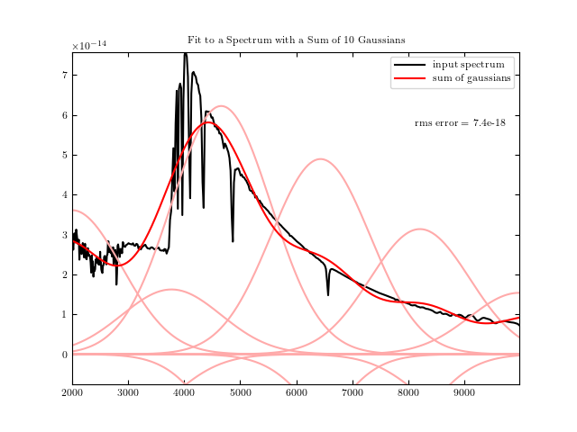
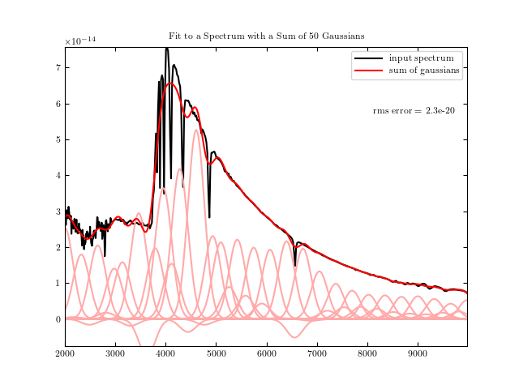

Linear Sum of Gaussians¶
Fitting a spectrum with a linear sum of gaussians.
 {kind=link}
{kind=link}
{kind=link}
# Author: Jake VanderPlas <vanderplas@astro.washington.edu>
# License: BSD
# The figure is an example from astroML: see http://astroML.github.com
from matplotlib import pyplot as plt
from astroML.datasets import fetch_vega_spectrum
from astroML.sum_of_norms import sum_of_norms, norm
# Fetch the data
x, y = fetch_vega_spectrum()
# truncate the spectrum
mask = (x >= 2000) & (x < 10000)
x = x[mask]
y = y[mask]
for n_gaussians in (10, 50, 100):
# compute the best-fit linear combination
w_best, rms, locs, widths = sum_of_norms(x, y, n_gaussians,
spacing='linear',
full_output=True)
norms = w_best * norm(x[:, None], locs, widths)
# plot the results
plt.figure()
plt.plot(x, y, '-k', label='input spectrum')
ylim = plt.ylim()
plt.plot(x, norms, ls='-', c='#FFAAAA')
plt.plot(x, norms.sum(1), '-r', label='sum of gaussians')
plt.ylim(-0.1 * ylim[1], ylim[1])
plt.legend(loc=0)
plt.text(0.97, 0.8,
"rms error = %.2g" % rms,
ha='right', va='top', transform=plt.gca().transAxes)
plt.title("Fit to a Spectrum with a Sum of %i Gaussians" % n_gaussians)
plt.show()